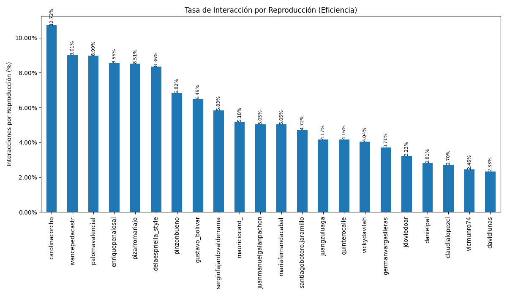

Análisis General de Candidatos en Instagram
Análisis basado en datos recopilados en Agosto y Septiembre 2025
Gráficos Comparativos de Rendimiento General



Resumen de Engagement por Tipo de Contenido
| Candidato | Seguidores | Avg. Engagement Video (Likes) | Avg. Engagement Video (Comentarios) | Avg. Engagement Imagen (Likes) | Avg. Engagement Imagen (Comentarios) | Avg. Engagement Carrusel (Likes) | Avg. Engagement Carrusel (Comentarios) |
|---|---|---|---|---|---|---|---|
| Carolina Corcho | 116,104 | 1078.72% | 52.59% | 196.89% | 8.54% | 314.47% | 20.53% |
| Claudia Lopez | 1,000,983 | 18.57% | 3.29% | 11.70% | 0.42% | 5.45% | 0.63% |
| Daniel Palacios | 57,555 | 548.96% | 26.69% | 309.65% | 236.18% | 42.59% | 1.32% |
| David Luna | 257,949 | 134.26% | 6.46% | 469.43% | 12.17% | 151.59% | 3.78% |
| Abelardo de la Espriella | 666,744 | 492.75% | 31.67% | 1223.58% | 34.18% | 805.86% | 40.90% |
| Enrique Peñalosa | 96,882 | 183.28% | 11.70% | 250.71% | 6.85% | 83.88% | 2.89% |
| Germán Vargas Lleras | 135,612 | 145.54% | 7.97% | 220.44% | 8.45% | 484.79% | 13.68% |
| Gustavo Bolivar - gustavo_bolivar | 432,395 | 125.89% | 6.22% | 0.00% | 0.00% | 0.00% | 0.00% |
| Gustavo Bolivar - gustavobolivarsenador | 174,060 | 355.69% | 41.75% | 2.87% | 0.80% | 82.86% | 3.51% |
| Ivan Cepeda | 157,247 | 379.08% | 27.87% | 229.73% | 7.89% | 141.83% | 5.26% |
| Juan Daniel Oviedo | 249,200 | 41.66% | 2.30% | 112.14% | 4.84% | 45.43% | 1.06% |
| Juan Guillermo Zuluaga | 103,833 | 96.99% | 5.78% | 50.91% | 2.35% | 75.22% | 2.02% |
| Juan Manuel Galan | 40,608 | 291.92% | 27.34% | 93.33% | 3.37% | 138.79% | 4.64% |
| Maria Fernanda Cabal | 377,751 | 165.44% | 14.65% | 293.75% | 14.00% | 183.76% | 8.86% |
| Mauricio Cardenas | 94,430 | 228.31% | 13.16% | 132.97% | 7.62% | 0.00% | 0.00% |
| Paloma Valencia | 253,862 | 265.70% | 11.80% | 198.88% | 7.23% | 67.34% | 1.27% |
| Juan Carlos Pinzón | 45,657 | 342.40% | 39.71% | 29.24% | 0.44% | 339.90% | 12.73% |
| Maria José Pizarro | 264,707 | 128.70% | 6.58% | 182.30% | 8.43% | 175.69% | 6.09% |
| Daniel Quintero | 363,821 | 220.74% | 27.26% | 63.01% | 20.03% | 25.57% | 1.97% |
| Santiago Botero | 179,663 | 291.80% | 19.31% | 427.69% | 20.71% | 87.58% | 4.58% |
| Sergio Fajardo | 270,670 | 99.97% | 5.36% | 48.31% | 1.20% | 52.87% | 1.54% |
| Vicky Dávila | 1,478,819 | 46.11% | 5.65% | 116.87% | 8.60% | 39.10% | 3.26% |
| Victor Muñoz | 2,571 | 202.41% | 5.84% | 321.00% | 14.11% | 233.55% | 3.89% |
Análisis Individual Detallado
| Candidato | Reporte Detallado |
|---|---|
| Vicky Dávila | Ver Análisis |
| Abelardo de la Espriella | Ver Análisis |
| Gustavo Bolivar - gustavo_bolivar | Ver Análisis |
| Maria Fernanda Cabal | Ver Análisis |
| Enrique Peñalosa | Ver Análisis |
| Ivan Cepeda | Ver Análisis |
| Daniel Quintero | Ver Análisis |
| Claudia Lopez | Ver Análisis |
| Maria José Pizarro | Ver Análisis |
| Sergio Fajardo | Ver Análisis |
| David Luna | Ver Análisis |
| Juan Daniel Oviedo | Ver Análisis |
| Juan Manuel Galan | Ver Análisis |
| Germán Vargas Lleras | Ver Análisis |
| Santiago Botero | Ver Análisis |
| Juan Carlos Pinzón | Ver Análisis |
| Carolina Corcho | Ver Análisis |
| Victor Muñoz | Ver Análisis |
| Paloma Valencia | Ver Análisis |
| Mauricio Cardenas | Ver Análisis |
| Juan Guillermo Zuluaga | Ver Análisis |
| Daniel Palacios | Ver Análisis |